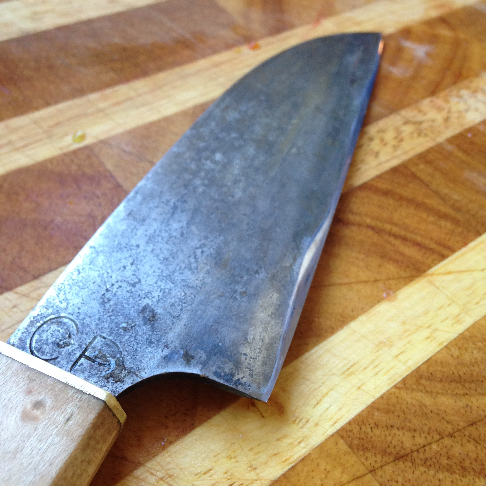

I've always been interested in blacksmithing and metalworking. Every year Worcester has a really cool art festival and I would always spend most of my time watching this group of blacksmiths. I finally asked them if they needed any help and I ended up spending some time in their shop over two summers. I learned how to use the forge in exchange for help with their projects. This is the second knife I finished, I'm pretty happy with the result and will keep it for the rest of my life!
The blade is made of three laminated layers of steel. The outside layers are mild steel forge-welded to an inner billet of high carbon steel. This balances a flexible spine and a hard enough edge to stay sharp. In the photo below if you look closely you can see the line between the two pieces of steel I was going for a santouko shape, sort of a medium-length utility knife. I wish it were a little longer, but it's hard to know how much steel you are going to need while hammering out the final shape. The profile of the knife could also be improved. The bevel is too short and shallow so when you're cutting, the knife pushes away from the food leaving you with an angled cut. I compensate by tilting the knife towards the food, but it's not an exact science.
I had fun putting the handle on. There's a brass ferule with bird's-eye maple and mahogany. Sticking with the Japanese theme I tried shaping it into an octagon. Its a little taller than wide so the shape is a bit goofy, but it's comfortable and the tung oil finish looks great. I only wish I spent more time polishing the brass